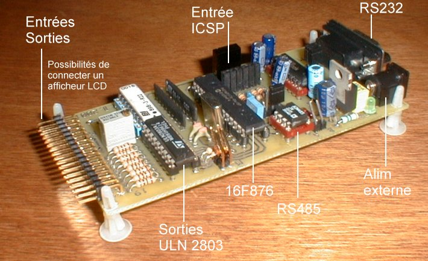

Cette carte automate utilise le PIC 16F876 qui possède plus d'un atout dans son sac:
- Mémoire EEPROM Flash de 8ko, 368o de RAM et 256o d'EEPROM données.
- Convertisseur A/D de 10 bits.
- Possibilité de liaisons RS232, I2C, SPI.
- Possibilité de PWM, Timers
- Programmable In Situ (ICSP)
La carte permet:
- De Piloter un afficheur LCD ou bien d'exploiter les Timers.
- D'avoir 8 sorties collecteur ouvert ( dont 2 sorties PWM).
- D'avoir soit une liaison RS 232, soit une liaison RS 485.
- D'avoir une entrée Infra-Rouge de type RC5.
- D'avoir une liaison I2C (pour éventuellemnt espionner).
- D'être programmable In Situ (ICSP).
Vous pouvez télécharger le projet comportant: le schéma, le typon et
l'implantation (~71 ko).
|